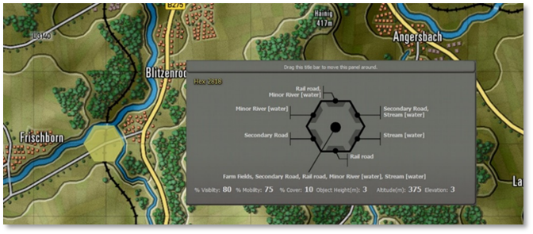
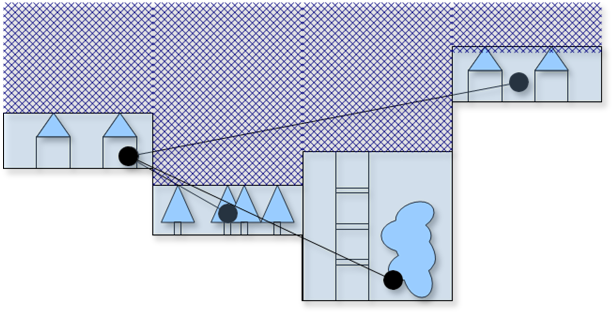
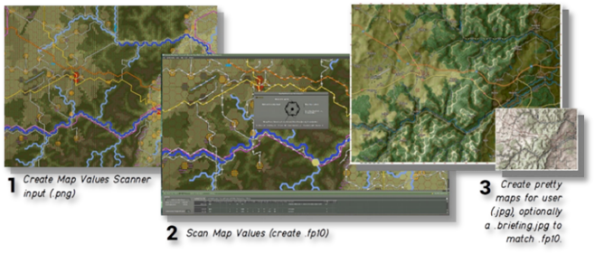
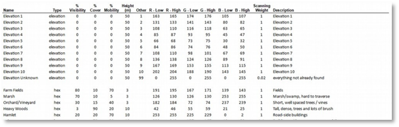
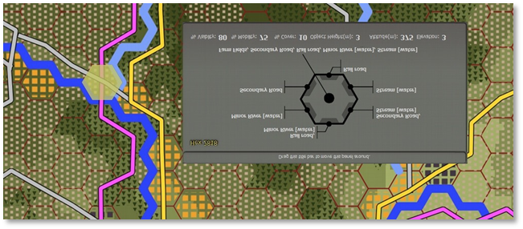

Map Making
Welcome to the Flashpoint Campaigns Guide to creating Maps and Map Values with QGis. This guide is using the QGis GIS tool as the editor to create a map values bitmap defining the terrain for the Flashpoint Campaigns game.
Game Map
The game map in Flashpoint Campaigns defines the terrain for the game, and for the players (be it a computer player or human player).
Flashpoint Campaigns uses hexagon-based maps, where the terrain partitioned into 500m hexagons (hexes). Each hex defines the local mobility, local visibility / occlusion at ground level, and the local cover. Each hex also defines its altitude (above sea level), and the height to which its contents (fields, forests, high-rise buildings) extend from the ground.
In addition, each of the hex’ six sides can have special properties:
-
Having a road (and great mobility) into the adjacent hex,
-
Being a barrier to the adjacent hex, blocking or delaying movement across the hex side as a wet or dry obstacle, and enabling bridges to be placed to reduce the barrier
-
Representing a height difference, with large height differences (steep slopes) being impassable to vehicles
-
Beach lines, enabling landing craft to unload its cargo from the water hex across the hex side into a dry hex
This is illustrated in the figure below, where a piece of field terrain is crossed by a secondary road and a railroad, and bordered by a wide water obstacle (North, Northwest) and a minor water obstacle (Northeast, Southeast).

Figure 1: A game map hex (see the yellow highlight), with its properties for the central terrain and for the six hex sides in the gray panel
The Flashpoint Campaigns game uses the terrain to perform path-planning (on the ground, and in the air), to pick positions for observations, concealment, interdiction, and for line-of-sight/line-of-fire calculations.
For line-of-sight calculations, the terrain is treated as several plateaus, each containing objects on their terrain, and atmosphere above them. The objects and the atmosphere above it both have different properties with respect to blocking / attenuating the (optical, thermal, RADAR) line of sight. See Figure 2.

Figure2: Lines-of-sight, taking into account the atmosphere (hatched) above hexes, and the objects in the hex
Map Creation Process
The aim of map creation is to define terrain such that the Flashpoint Campaigns game, the Flashpoint Campaigns computer player, and the human player all understand it.
This guide focuses on creating maps for the Flashpoint Campaigns game and Flashpoint Campaigns computer player; creating a pretty map for the human player is more an ‘art’ and does not need to be restricted by this guide. See Figure 3.

Figure3: The map making process
The Flashpoint Campaigns game includes the ‘Map Values Scanner’ to scan a bitmap to generate a terrain description (*.fp10) file.
The Map Values Scanner requires as input a bitmap (*.png file) with 128 pixels per kilometer, with pixels having colors defined by the Map Data Types file. This Map Data Types is a spreadsheet telling the scanner which colors represent elevation, fields, forests, roads, and streams. See Figure 4 and see Appendix B. Default FCSS Map Data Types for a more complete description.

Figure4: Part of the FCSS Map Data Types file, defining the interpretation of the map values bitmap

Figure 5: The map values bitmap input for the terrain described in the first figureScanning the map values bitmap is a fully automatic process. The effort of creating the map is in creating the input for the Map Values Scanner, the so-called Map Values Bitmap. For this, we recommend using a third-party tool dedicated to creating maps: QGis.
QGis
This guide is using the QGis GIS tool as the editor to create a map values bitmap.
QGis is an attractive editor because it is free, it handles digital elevation data (DEM) well, it allows you to draw quickly to a hexagon grid, and it offers nice overlays of tile maps from OpenStreetMap / Google and Bing.
QGis also comes with two disadvantages: it is a complex tool designed for manipulating map data in general, not just hex game maps. And it doesn't automatically create pretty maps. However, it allows you to create mashups blending your annotations with OpenStreetMap / Google / Bing maps or generated relief data.
This guide (and the corresponding example project) describes how to configure QGis and create a first map. The corresponding example project includes a set of QGis styles and templates tuned for creating a map values bitmap for the Flashpoint Campaigns 2.x engine (see Appendix A).
Note
To get the most out of QGis, notably out of the OpenStreetMap / Google / Bing layers, QGis is best run from a computer connected to the internet.